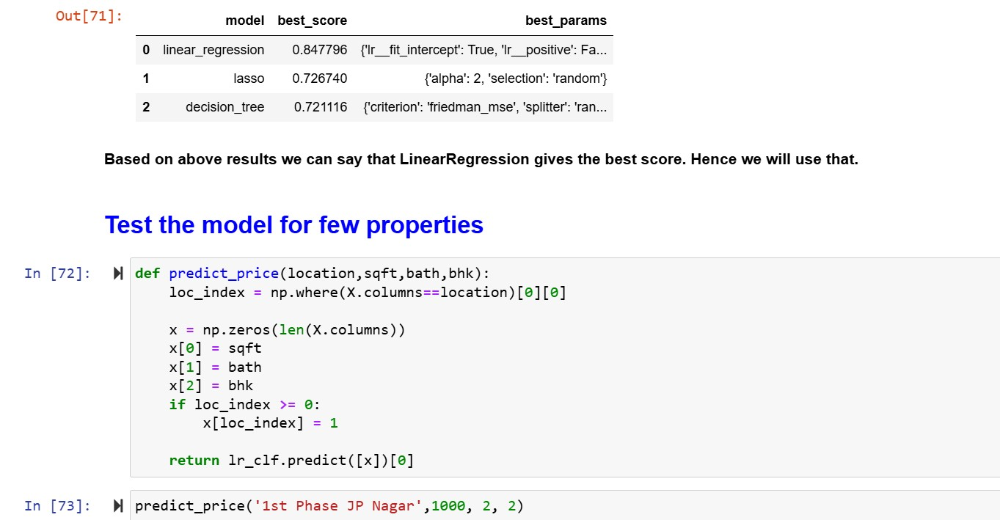

✔Problem Statement
The goal of this project is to develop a machine learning model capable of accurately predicting real estate prices in Bangalore based on key features such as area, number of bedrooms, and number of bathrooms. The model will utilize the Bangalore home prices dataset sourced from Kaggle. This involves handling the entire machine learning pipeline, including data preprocessing, feature engineering, model selection, hyperparameter tuning, and performance evaluation. The final model will be saved and deployed to power the backend of a real estate price prediction website.
Github Link
🔗 Link →
✔Process
- Step 1: Data Cleaning – Removed irrelevant or inconsistent data to ensure data quality.
- Dropped unnecessary columns and handled missing values (NA values) effectively.
- Cleaned and standardized the
total_sqft column, which contained values in ranges (e.g., 2100-4000). For such cases, calculated the average of the range. Converted other values (e.g., 34.56 square meters) to square feet, making the entire column uniform.
- Step 2: Feature Engineering – Enhanced the dataset by creating meaningful features.
- Added a new column,
bhk (Bedroom, Hall, Kitchen), based on the number of bedrooms.
- Created a
price_per_sqft column by dividing the price by the total square feet to standardize price comparisons.
- Reduced the dimensionality of the
locations column by grouping locations with less than 10 data points as "Other." This approach significantly decreased the number of categories, simplifying the one-hot encoding process.
- Step 3: Outlier Removal – Ensured data consistency by removing anomalies.
- Size Threshold: Removed properties where the square footage per BHK was below 300 sqft (e.g., a 2 BHK apartment with less than 600 sqft was considered an outlier).
- Price per Square Foot: Used the
price_per_sqft.describe function to identify and remove outliers based on mean and one standard deviation, ensuring consistency within locations.
- BHK Anomalies: Eliminated properties where, for the same location, a larger BHK apartment was priced lower than a smaller BHK apartment with the same area.
- Bathroom Anomalies: Removed properties where the number of bathrooms exceeded the number of bedrooms, as such configurations were deemed unrealistic.
- Step 4: One-Hot Encoding – Converted categorical data into numerical format for model compatibility.
- Converted categorical text data (e.g., locations) into binary columns using one-hot encoding.
- Ensured all text data was transformed into numerical form, making the dataset compatible with machine learning models.
- Step 5: Model Building – Developed and evaluated predictive models.
- Initial Model: Selected Linear Regression for its effectiveness in predicting house prices, which is the dependent variable, based on independent variables like location and BHK.
- Split the dataset into training and testing sets using
train_test_split.
- Trained the model and evaluated its performance using
model.score(X_test, Y_test), achieving an initial accuracy of 86%.
- Advanced Techniques:
- Applied K-Fold Cross Validation (5 folds) to validate the Linear Regression model's performance. All iterations achieved an accuracy above 80%.
- Conducted GridSearchCV to test other regression models, including Lasso Regression and Decision Tree Regression.
- Results:
- On validation data, Linear Regression provided the best accuracy of 84%, outperforming other models.
- Based on these results, Linear Regression was selected as the final model.
✔Skills Showcased
Data Cleaning
Data Preprocessing
Feature Engineering
Hyperparameter Tuning
Python
Exploratory Data Analysis
✔ Technologies Used
One Hot Encoding
Matplotlib
Sklearn
GridSearchCV
Best Model

✔Conclusion
The trained regression model was saved for deployment, powering the backend of a real estate price prediction website.